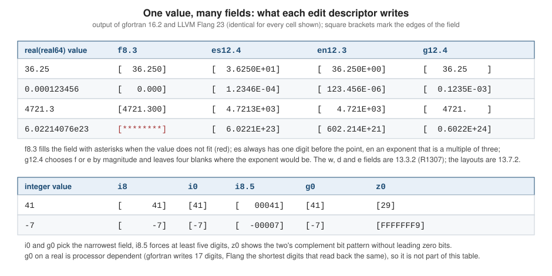

Format Specifications and Edit Descriptors
|
This content was generated with the assistance of AI and should be verified against the official documentation before being relied on in production. |
This page is written against Fortran 2023 (ISO/IEC 1539-1:2023, J3/23-007r1) and was checked on 2026-10-19. Every example
was compiled with gfortran -std=f2023 -Wall -Wextra -pedantic -fimplicit-none -fcheck=all (GNU Fortran 16.2) and run, and
the examples were also built and run with LLVM Flang 23; the output shown is real output. Where the two compilers
disagree, or one of them rejects the code, both results are shown. The rules are in Clause 13 of the standard (input/output
editing): format specifications are 13.1 and 13.2, the form of a format item list 13.3, the interaction between the
input/output list and the format (including reversion) 13.4, the data edit descriptors 13.7, the control edit
descriptors 13.8, and character string edit descriptors 13.9. The format specifier of a data transfer statement is 12.6.2.2,
and the changeable connection modes are 12.5.2 with their specifiers in 12.5.6 (open) and 12.6.2 (data transfer
statements). List-directed and namelist formatting (13.10 and 13.11) have their own page,
Internal Files, Namelist and Non-Advancing I/O.
A format tells a formatted read, write or print how to convert between the values in the input/output list and the
characters of a record. It is a list of edit descriptors: data edit descriptors (i, f, es, a, …) that each
convert one list item, control edit descriptors (x, /, p, sp, …) that move within the record or change a mode, and
character string edit descriptors ('text') that write constant text. The format is separate from the I/O statement, so
the same format can be reused, built at run time, or replaced by * to let the processor choose. The running example,
heatflow, needs formats for three jobs: a readable report of the temperature field, the CSV rows written by write_csv
(see Input/Output: Units and Files), and reading
numbers back from text. The page follows the order in which a format is used: where it comes from, how format control walks
through it, every edit descriptor, the connection modes that change how they behave, and then input, CSV and report output,
diagnostics, and the compiler differences and deleted features that matter when old code or tutorials are reused.
The figure below shows the same values written by the descriptors most often compared: f8.3, es12.4, en12.3,
g12.4 and, for integers, i8, i0, i8.5, g0 and z0. The cells are real output of both compilers.

Where a format comes from
A formatted data transfer statement names its format with the fmt= specifier or, in the short form, as its first
positional item. The specifier (R1215, 12.6.2.2) is one of three things:
| Form | Meaning | Clause |
|---|---|---|
A character expression |
it shall evaluate to a string that starts with a valid format specification; characters after the closing parenthesis are ignored. A character array is treated as if its elements were concatenated in array element order, but a character array element must contain a whole format by itself |
12.6.2.2, 13.2.2 |
A statement label |
the label of a |
12.6.2.2, 13.2.1 |
|
list-directed formatting: no explicit descriptors, the processor chooses the layout |
13.10 |
A namelist group name in place of a format selects namelist formatting (13.11). The next example writes the same row of the temperature field with every explicit form, plus a format that is assembled at run time with an internal write, a format in a character array, and list-directed output:
program format_forms
use, intrinsic :: iso_fortran_env, only: real64
implicit none
integer, parameter :: dp = real64
integer, parameter :: nx = 5
real(dp) :: row(nx) = [20.0_dp, 36.25_dp, 52.5_dp, 36.25_dp, 20.0_dp]
character(len=*), parameter :: row_fmt = '(a, 5f8.2)' ! a named constant is a format
character(len=24) :: dyn_fmt
character(len=16) :: parts(2)
integer :: k
! 1. A character literal
write (*, '(a, 5f8.2)') 'literal: ', row
! 2. A labelled FORMAT statement
write (*, 100) 'label: ', row
100 format (a, 5f8.2)
! 3. A character constant or variable
write (*, row_fmt) 'named: ', row
! 4. A format assembled at run time, here with the row length
write (dyn_fmt, '("(a, ", i0, "f8.2)")') nx
write (*, '(a)') 'built format: ' // trim(dyn_fmt)
write (*, dyn_fmt) 'dynamic: ', row
! 5. A character array: the elements are concatenated in array element order
parts = [character(len=16) :: '(a, ', '5f8.2)']
write (*, parts) 'array: ', row
! 6. List-directed: the processor chooses the layout
write (*, *) 'star:', row(1:2)
! 7. A repeat count larger than the list is harmless: format control stops at the first
! data edit descriptor without an item
write (*, '(a, 9f8.2)') 'extra: ', row
! 8. Blanks are free and case does not matter
write (*, '( A , 5 F 8 . 2 )') 'blanks: ', row
k = 0
write (*, '(a, i0)') 'items printed with i0: ', k
end program format_formsOutput with gfortran:
literal: 20.00 36.25 52.50 36.25 20.00
label: 20.00 36.25 52.50 36.25 20.00
named: 20.00 36.25 52.50 36.25 20.00
built format: (a, 5f8.2)
dynamic: 20.00 36.25 52.50 36.25 20.00
array: 20.00 36.25 52.50 36.25 20.00
star: 20.000000000000000 36.250000000000000
extra: 20.00 36.25 52.50 36.25 20.00
blanks: 20.00 36.25 52.50 36.25 20.00
items printed with i0: 0Flang prints the same lines except the list-directed one, which is up to the processor:
star: 20. 36.25The points the example shows, and a few it does not:
-
A character expression is the general form. A
parameteris the best way to share a constant format between statements; acharacter(len=*), parameteravoids a length that has to match. A format in a variable is read every time the statement executes, so an error in it is a run-time error (see When the format and the list disagree). -
A labelled
formatstatement has the label in columns 1 to 5 in fixed form and anywhere before the statement in free form. It is shared by every statement that names its label, which is its only advantage over a named character constant. It has the same syntax as the character form, but without the quotes. The deleted assigned-format feature (assign 10 to fmt) is covered under Deleted and nonstandard features. -
Blanks are free and case does not matter. Blanks may appear anywhere in a format specification except inside a character string edit descriptor (13.2.1), and an edit descriptor is the same in upper and lower case, except inside a string (13.3.2). The example’s
'( A , 5 F 8 . 2 )'is valid. -
A format with a leading text item such as
'("T = ", f6.2)'writes the text first. Quote the delimiters carefully: inside a format written with apostrophes, a string edit descriptor needs doubled apostrophes ('(''it''''s'', i3)'), so writing the format with quotation marks ("(a, 'it''s')"or the other way round) is the usual way out. Standard 13.2.2 (Note 2) shows the same rule withisn't. -
A format can be built at run time, as the example builds
(a, 5f8.2)from the row length with an internalwrite. The idiom is the way to apply a runtime width or number of columns; the*( )form in the next section often removes the need for it. -
print fmt, listiswrite (*, fmt) list, andprint *, listis list-directed output to the standard output unit.
The format item list
The syntax of the list (R1303 to R1306, 13.3.1) is short:
| Item | Meaning |
|---|---|
|
the descriptor repeated |
|
a group repeated |
|
the unlimited format item: the group repeats as often as there are items left (C1303: it shall contain a data edit descriptor, and it shall be the last item of the format) |
|
items are separated by commas, which may be omitted only before or after a slash, before or after a colon, and between a |
A repeat count before / is the number of records to end, and a repeat count before a parenthesised group repeats the whole
group (2(f6.1, i5)). The count applies to the group as a unit, and it is reused every time format control reverts to that
group. The only descriptor that does not take a repeat count is a control descriptor other than /: 3x is the position
descriptor x with n = 3, not three x descriptors. Nothing about a descriptor’s width or digits is shared between
repeats: 3f8.2 is three independent f8.2, 2(f8.2, i3) is f8.2, i3, f8.2, i3.
The effective items of the I/O list (12.6.3) pair up with the data edit descriptors, left to right. An array or an array
section contributes its elements in array element order, an implied do its generated items, and a derived-type object its
components (unless it has a defined I/O procedure). A zero-sized array or an implied do with no iterations contributes
no item; a zero-length character item does. A complex item needs two real descriptors and a derived-type item with a
defined I/O procedure needs one dt. When a format needs an effective item and there is none, it stops.
Format control, reversion and the colon
Format control (13.4) interprets the format from left to right, pairing each data edit descriptor with the next effective item. The rules that decide what happens at the end of the format or when items run out are the ones programmers get wrong:
-
When format control meets a data edit descriptor and the list has no item left, it terminates. Whatever comes before that descriptor has been written; whatever follows has not. Control and string descriptors between the last used descriptor and the next unused data descriptor are processed.
-
A colon edit descriptor terminates format control if no effective item remains, and has no effect if one does (13.8.3). It is the way to stop a trailing string or separator from being written when the list ends.
-
When format control reaches the final right parenthesis and the list still has items, the record is ended as if by a slash, and the format reverts: it restarts at the beginning of the format item that is terminated by the last preceding right parenthesis (not counting one that belongs to a
dtdescriptor), or at the first left parenthesis if there is no such right parenthesis. If a repeat count precedes that parenthesis it is reused. The reused part shall contain at least one data edit descriptor. -
The unlimited format item
*( )reverts to its own left parenthesis, without ending the record, as often as items remain. It writes a whole array into a single record, which is what a CSV row needs (13.4, Note 4).
The example runs the cases on the temperature and identifier arrays of the field:
program reversion
implicit none
integer, parameter :: n = 7
real :: temp(n) = [10.1, 3.0, 4.7, 1.0, 12.4, 5.0, 5.2]
integer :: ids(n) = [101, 102, 103, 104, 105, 106, 107]
! The list is longer than the format: when the closing parenthesis is reached and items
! remain, format control starts a new record at the beginning of the format
write (*, '(3f7.1)') temp
! With a leading text item the whole format is repeated, text included
write (*, '(" T:", 3f7.1)') temp
! Reversion goes back to the last parenthesis group at the top level, so the text before
! the group is written once
write (*, '("ids:", 3(1x, i4))') ids
! Pairs of items; reversion to a group reuses its repeat count
write (*, '(1x, 2(f6.1, i5))') 10.1, 3, 4.7, 1, 12.4, 5, 5.2, 6
! The unlimited format item *( ) repeats without limit and without a new record
write (*, '("temps =", *(f6.1, :, ","))') temp
write (*, '(*(i0, :, ", "))') ids
! The colon stops format control when the list is exhausted
write (*, '(a, i0, :, " of ", i0)') 'step ', 3, 10
write (*, '(a, i0, :, " of ", i0)') 'step ', 3
! A text item after the last used data edit descriptor is still written without a colon
write (*, '(a, i0, " done")') 'steps ', 3
end program reversionThe output is the same with gfortran and Flang:
10.1 3.0 4.7
1.0 12.4 5.0
5.2
T: 10.1 3.0 4.7
T: 1.0 12.4 5.0
T: 5.2
ids: 101 102 103
104 105 106
107
10.1 3 4.7 1
12.4 5 5.2 6
temps = 10.1, 3.0, 4.7, 1.0, 12.4, 5.0, 5.2
101, 102, 103, 104, 105, 106, 107
step 3 of 10
step 3
steps 3 doneReading the output: the first statement has a 7-item list and a format with three descriptors, so it writes two full
records and a third with one value. The second, with a leading text item, repeats the text on every record. The third has
the text in front of a group, so reversion returns to the group (1x, i4) and the text ids: is written only once.
The fourth shows a repeat count (2) on the group that is returned to, reused for the second record. The unlimited item
writes the whole array in one record, and the colon removes the trailing comma and the trailing " of " text.
One reversion trap is worth spelling out. A format such as '(a, 3f7.1)' applied to a text label and seven reals does not
write a text label and then seven numbers: after three numbers it reverts to the start of the format, so the fourth real
goes to the a descriptor. Neither compiler diagnoses an a descriptor paired with a real (see
When the format and the list disagree), so the output is garbage characters. When a list can be longer than the
format, put the repeated part in a group and the text in front of it, or use the unlimited item.
When the format and the list disagree
A format is checked in two places. A format that is a character constant is checked by the compiler, which reports the position of a malformed descriptor. A format in a variable, a named constant passed through a dummy argument or a character array is checked when the statement runs. A list that does not match the descriptors is always a run-time matter.
Both compilers reject a malformed literal format at compile time. Source:
program bad_literal
implicit none
integer :: n = 41
write (*, '(i4') n
write (*, '(i0, 2.5f8.3)') n, 1.5
write (*, '(i0, f8.)') n, 1.5
write (*, '(i0, q)') n
end program bad_literalgfortran 16.2 reports four errors:
04_bad_literal.f90:4:15:
4 | write (*, '(i4') n
| 1
Error: Unexpected end of format string in format string at (1)
04_bad_literal.f90:5:18:
5 | write (*, '(i0, 2.5f8.3)') n, 1.5
| 1
Error: Unexpected element '.' in format string at (1)
04_bad_literal.f90:6:20:
6 | write (*, '(i0, f8.)') n, 1.5
| 1
Error: Nonnegative width required in format string at (1)
04_bad_literal.f90:7:17:
7 | write (*, '(i0, q)') n
| 1
Error: Unexpected element 'Q' in format string at (1)Flang 23 reports four errors as well, with different wording:
error: Semantic errors in 04_bad_literal.f90
04_bad_literal.f90:4:17: error: Unterminated format expression
write (*, '(i4') n
^
04_bad_literal.f90:5:20: error: Unexpected '.' in format expression
write (*, '(i0, 2.5f8.3)') n, 1.5
^
04_bad_literal.f90:6:22: error: Expected 'F' edit descriptor 'd' value after '.'
write (*, '(i0, f8.)') n, 1.5
^
04_bad_literal.f90:7:19: error: Unexpected 'Q' in format expression
write (*, '(i0, q)') n
^When the format comes from a variable, the same mistakes surface at run time, which the iostat= and iomsg=
specifiers make easy to observe. The subroutine below writes the integer n and the real x into a character buffer with
a format passed as an argument and reports the outcome:
program mismatch
implicit none
integer :: n = 41
real :: x = 1.5
call attempt('(f6.2)') ! an integer item for an F descriptor
call attempt('(i4, i4)') ! a real item for an I descriptor
call attempt('(i4, f6.2, i4)') ! more descriptors than items: fine
call attempt('(i4') ! missing right parenthesis
call attempt('(i4, 2.5f8.3)') ! malformed descriptor
call attempt('(i4, f8.)') ! missing d
call attempt('("no edit")') ! items but no data edit descriptor
contains
subroutine attempt(fmt)
character(len=*), intent(in) :: fmt
character(len=60) :: buf
character(len=200) :: msg
integer :: ios, eol
msg = ''
write (buf, fmt, iostat=ios, iomsg=msg) n, x
if (ios == 0) then
print '(3a)', fmt, ' -> ok: ', trim(buf)
else
eol = index(msg, new_line('a')) ! gfortran appends the format and a marker line
if (eol == 0) eol = len_trim(msg) + 1
print '(2a, i0, 2a)', fmt, ' -> iostat=', ios, ' ', msg(1:eol-1)
end if
end subroutine attempt
end program mismatchgfortran 16.2:
(f6.2) -> iostat=5006 Expected REAL for item 1 in formatted transfer, got INTEGER
(i4, i4) -> iostat=5006 Expected INTEGER or UNSIGNED for item 2 in formatted transfer, got REAL
(i4, f6.2, i4) -> ok: 41 1.50
(i4 -> iostat=5006 Unexpected element '4' in format
(i4, 2.5f8.3) -> iostat=5006 Unexpected element '.' in format
(i4, f8.) -> iostat=5006 Nonnegative width required in format
("no edit") -> iostat=5006 Insufficient data descriptors in format after reversionFlang 23:
(f6.2) -> iostat=1005 Data edit descriptor 'F' may not be used with an INTEGER data item
(i4, i4) -> iostat=1005 Data edit descriptor 'I' may not be used with a REAL data item
(i4, f6.2, i4) -> ok: 41 1.50
(i4 -> iostat=1005 FORMAT missing at least one ')'
(i4, 2.5f8.3) -> iostat=1005 Invalid character in FORMAT; at offset 3 in format '(i4, 2.5f8.3)'
(i4, f8.) -> iostat=1005 Invalid FORMAT: integer expected at ')'
("no edit") -> iostat=1004 Internal write overran available recordsThe six messages differ in wording but agree on the cause. The iostat values are processor dependent (5006 with gfortran, 1004 and 1005
with Flang) and only their sign matters: a positive value is an error (12.11.5). Note how ("no edit") with two items fails: the
list has items but the format has no data edit descriptor, which 13.4 forbids; gfortran detects it when it tries to revert,
Flang when its internal write runs out of record.
Without iostat= the same error ends the program. gfortran 16.2:
program runtime_error
implicit none
integer :: step = 200
print '(a, f8.2)', 'step = ', step
print '(a)', 'not reached'
end program runtime_errorAt line 4 of file 24_runtime_error.f90 (unit = 6, file = 'stdout')
Fortran runtime error: Expected REAL for item 2 in formatted transfer, got INTEGER
(a, f8.2)
^Flang 23 prints fatal Fortran runtime error with the source line and Data edit descriptor 'F' may not be used with an
INTEGER data item, and aborts. The same holds for input: reading a record that has a character where a digit is required
('12x45' with i8) gives gfortran Bad value during integer read and Flang Bad character 'x' in INTEGER input field.
A mismatch that is not reported is the use of the a descriptor with a non-character item. The standard requires a
character item for a (13.7.4), and both compilers accept an integer or real item silently, even with -std=f2023, and
write or read the item’s bytes. It is a legacy extension that turns a type error into garbage output:
program a_with_integer
implicit none
integer :: ios, k
character(len=100) :: msg
character(len=8) :: buf
msg = ''
write (buf, '(a)', iostat=ios, iomsg=msg) 1818846825
print '(a, i0, a, a)', 'iostat=', ios, ' iomsg=', trim(msg)
print '(a, 4z3.2)', 'bytes: ', (ichar(buf(k:k)), k = 1, 4)
end program a_with_integerBoth compilers print the same:
iostat=0 iomsg=
bytes: 69 66 69 6CThe integer 1818846825 is 0x6C696669; the four bytes written are 69 66 69 6C hexadecimal, that is, the text ifil.
Do not rely on it; on a big-endian processor the bytes would come out in the other order. The portable ways to print
text are an a item that is a character, and transfer for conversions that are really needed.
Integer editing: i, b, o and z
iw writes an integer right-justified in a field of w characters, iw.m writes at least m digits (padding with
leading zeros), and i0 writes the narrowest field (13.7.2.2). The b, o and z descriptors write the bit pattern of
an integer (or, as the standard allows, a real or complex value) in binary, octal and hexadecimal, without leading zero
bits (13.7.2.4). Rules worth knowing:
-
If the number does not fit in
wcharacters the field is filled with asterisks (13.7.2.1 rule 5). A leading minus sign counts. A field of width zero is never too narrow. -
iw.0with the value zero writes only blanks, soi6.0is a way to suppress zeros in a table.i0.0of zero writes a single blank. -
On input
mhas no effect, andwshall not be zero. -
For
b,oandzthe value is the internal bit pattern: a negative integer shows its two’s complement representation, with as many digits as the kind has bits (z0of-7for a 32-bit integer isFFFFFFF9), and a 1-byte integer of 100 is64. They also read: az8field supplies the bit pattern of a 32-bit integer. -
For an enumeration type or an enum type,
i,b,oandzwrite the ordinal or the integer value;gis allowed for enum types (13.7.2.1, 13.7.2.2). Fortran 2023 added the enumeration type, which neither compiler implements; the page Enumerations discusses the I/O rules.
program integer_boz
use, intrinsic :: iso_fortran_env, only: int8, int64, real64
implicit none
integer :: n = 41, neg = -7, zero = 0
integer(int8) :: b = 100_int8
integer(int64) :: big = 123456789012_int64
real(real64) :: x = 1.0_real64
print '(a, i0, "|", i6, "|", i6.4, "|", i2, "|", i3.3, "|")', 'i: ', n, n, n, n, n
print '(a, i0, "|", i6, "|", i6.4, "|", i2, "|", i3.3, "|")', 'neg:', neg, neg, neg, neg, neg
print '(a, i0, "|", i6.0, "|", i0.0, "|", i3.0, "|")', 'zero:', zero, zero, zero, zero
print '(a, i0, "|", i4, "|", i15, "|")', 'int64: ', big, b, big
print '(a, "[", sp, i0, ss, "]", " [", sp, i0, "]")', 'sign: ', n, neg
! b, o and z write the bit pattern without leading zero bits
print '(a, b0, "|", b12.12, "|", o0, "|", z0, "|", z8.8, "|")', 'boz: ', n, n, n, n, n
print '(a, b0, "|", z0, "|", z0, "|")', 'neg: ', neg, neg, b
! b, o and z also accept real data: they show the bit pattern of the value
print '(a, z0, "|", z16.16, "|", b0)', 'real 1.0: ', x, x, 1.0
print '(a, 2z4.4)', 'two: ', 255, 4096
end program integer_bozThe output is the same with gfortran and Flang:
i: 41| 41| 0041|41|041|
neg:-7| -7| -0007|-7|***|
zero:0| | | |
int64: 123456789012| 100| 123456789012|
sign: [+41] [-7]
boz: 101001|000000101001|51|29|00000029|
neg: 11111111111111111111111111111001|FFFFFFF9|64|
real 1.0: 3FF0000000000000|3FF0000000000000|111111100000000000000000000000
two: 00FF1000The first line shows i3.3 writing 041 for 41, and the second shows the same descriptor for -7 needing four
characters, so it is filled with asterisks. The third line shows the zero special cases. The sign: line uses the sp and
ss control descriptors, which are covered with the other control descriptors.
Real editing: f, e, en, es, ex and d
All the real descriptors take w.d: the field width and the number of digits after the decimal point (or, for e, en
and es, the digits of the significand). Fortran allows w = 0 for output (13.7.2.1 rule 6), in which case the processor
chooses the narrowest field that does not overflow; f0.3 is the usual way to write a number without padding.
| Descriptor | Output form | Notes |
|---|---|---|
|
fixed point, |
the optional zero before the decimal point is dropped if the field is too narrow to hold it ( |
|
|
the exponent has two digits when it fits, three digits drop the letter, and |
|
as |
a processor may write |
|
engineering notation: significand in [1, 1000), exponent a multiple of three |
the scale factor has no effect (13.7.2.3.4) |
|
scientific notation: one digit before the point |
the scale factor has no effect (13.7.2.3.5) |
|
hexadecimal significand |
the binary exponent is a decimal integer after |
The rule of thumb behind the figure: f for values in a known range, es for anything that another program has to read
back, and g0 or f0.d only for output people read. Real output for five values with the common descriptors, plus the
d and g0 forms:
program real_forms
use, intrinsic :: iso_fortran_env, only: real64
implicit none
integer, parameter :: dp = real64
real(dp) :: v(5) = [0.0_dp, 3.14159265358979_dp, -0.000123456_dp, 4721.3_dp, 6.02214076e23_dp]
integer :: i
print '(a)', 'value f10.3 e12.4 es12.4 en12.3 d12.4 g0'
do i = 1, size(v)
print '(g17.8, 1x, f10.3, 1x, e12.4, 1x, es12.4, 1x, en12.3, 1x, d12.4, 1x, g0)', &
v(i), v(i), v(i), v(i), v(i), v(i), v(i)
end do
! exponent width and forms
print '(a, e12.4e1, "|", e12.4e2, "|", e12.4e4, "|", e12.4e0, "|", es12.4e3, "|")', 'e: ', &
4721.3_dp, 4721.3_dp, 4721.3_dp, 4721.3_dp, 4721.3_dp
print '(a, e12.4e1, "|", e12.4e2, "|", e12.4e4, "|", e12.4e0, "|", es12.4e3, "|")', 'e: ', &
1.0e-123_dp, 1.0e-123_dp, 1.0e-123_dp, 1.0e-123_dp, 1.0e-123_dp
! f with w = 0, e with w = 0
print '(a, f0.3, "|", f0.0, "|", e0.3, "|", es0.3, "|", en0.3, "|")', 'w=0: ', v(2), v(2), v(2), v(2), v(2)
print '(a, f0.3, "|", f0.3, "|", f0.3, "|")', 'zero: ', 0.0_dp, 0.5_dp, -0.25_dp
end program real_formsOutput with gfortran:
value f10.3 e12.4 es12.4 en12.3 d12.4 g0
0.0000000 0.000 0.0000E+00 0.0000E+00 0.000E+00 0.0000D+00 0.0000000000000000
3.1415927 3.142 0.3142E+01 3.1416E+00 3.142E+00 0.3142D+01 3.1415926535897900
-0.12345600E-03 -0.000 -0.1235E-03 -1.2346E-04 -123.456E-06 -0.1235D-03 -0.12345600000000001E-003
4721.3000 4721.300 0.4721E+04 4.7213E+03 4.721E+03 0.4721D+04 4721.3000000000002
0.60221408E+24 ********** 0.6022E+24 6.0221E+23 602.214E+21 0.6022D+24 0.60221407599999999E+024
e: 0.4721E+4| 0.4721E+04|0.4721E+0004| 0.4721E+4| 4.7213E+003|
e: ************|************|0.1000E-0122| 0.1000E-122| 1.0000E-123|
w=0: 3.142|3.|0.314E+001|3.142E+000|3.142E+000|
zero: .000|.500|-.250|The g0 column is the one place where Flang writes something else, because the standard leaves the digits of g0 to the
processor (13.7.5.2.3: "reasonable processor-dependent values"). Flang’s g0 and e0.3/es0.3/en0.3 forms of the
same program:
| Value | gfortran 16.2 g0 |
Flang 23 g0 |
|---|---|---|
|
|
|
|
|
|
|
|
|
|
|
|
|
|
|
gfortran writes the 17 significant digits of the stored real64, Flang the shortest digits that read back the same
value, so gfortran shows binary rounding noise (4721.3000000000002) that Flang hides. Both are standard-conforming, and
neither is what a person would call "4721.3" in all cases. The same program also shows the w = 0 exponent forms:
e0.3 of 3.14159 is 0.314E+001 with gfortran and .314E+01 with Flang, and es0.3 is 3.142E+000 against
3.142E+00. Table 13.1 of the standard (E0.d has "the minimum number of digits required") suggests E+1 and
E+0, which neither compiler writes, so keep an explicit w when the exact text matters.
Exponent forms and widths
The exponent field is the part of e, d, en and es that surprises people (Tables 13.1 to 13.3). With w > 0 and no
Ee suffix, the exponent is E+dd or E-dd when its absolute value is at most 99, and +ddd or -ddd (no letter) when
it needs three digits. With an Ee suffix the exponent has exactly e digits and the letter, and the whole field is filled
with asterisks if the exponent needs more. Ee with e = 0 and w = 0 give the shortest exponent. The example prints the
same values with several exponent widths:
program exponent_forms
use, intrinsic :: iso_fortran_env, only: real64
implicit none
integer, parameter :: dp = real64
real(dp) :: big = 1.0e123_dp, small = 1.0e-123_dp, mid = 12345.678_dp
! Three-digit exponents lose the letter in the plain Ew.d forms (Table 13.1)
print '(a, "[", e12.4, "][", e12.4, "][", d12.4, "][", e12.4, "]")', 'e/d: ', big, small, big, mid
print '(a, "[", es12.4, "][", es12.4, "][", en12.4, "][", en12.4, "]")', 'es/en: ', big, small, big, small
end program exponent_formsThe output is the same with gfortran and Flang:
e/d: [ 0.1000+124][ 0.1000-122][ 0.1000+124][ 0.1235E+05]
es/en: [ 1.0000+123][ 1.0000-123][ 1.0000+123][ 1.0000-123]Here is the output of the exponent-width lines of the real-forms program above, for 4721.3 and 1.0e-123:
e: 0.4721E+4| 0.4721E+04|0.4721E+0004| 0.4721E+4| 4.7213E+003|
e: ************|************|0.1000E-0122| 0.1000E-122| 1.0000E-123|The columns are e12.4e1, e12.4e2, e12.4e4, e12.4e0 and es12.4e3. With e1 or e2 the exponent -123 does
not fit, so the field is asterisks.
The EX descriptor
ex writes a real as a hexadecimal significand and a binary exponent, 0X1.6P+0 for 1.375 with ex0.1 (the standard’s own
example). The format is exact when d is zero, which makes ex0.0 the way to write a real so that it reads back to the
identical bit pattern in a text file. gfortran 16.2 does not implement it. Flang 23 does:
program ex_descriptor
use, intrinsic :: iso_fortran_env, only: real64
implicit none
integer, parameter :: dp = real64
! Hexadecimal-significand output with the EX descriptor (13.7.2.3.6).
! The exact digits of the first hexadecimal digit are processor dependent.
print '(a, ex0.0, "|", ex20.4, "|", ex0.2)', 'ex: ', 1.375_dp, 1.375_dp, 15.625_dp
print '(a, ex0.0)', 'tiny: ', 0.1_dp
end program ex_descriptorgfortran 16.2 reads ex as e followed by an unknown item and rejects the program at compile time:
07_ex_descriptor.f90:7:21:
7 | print '(a, ex0.0, "|", ex20.4, "|", ex0.2)', 'ex: ', 1.375_dp, 1.375_dp, 15.625_dp
| 1
Error: Period required in format specifier E at (1)
07_ex_descriptor.f90:8:21:
8 | print '(a, ex0.0)', 'tiny: ', 0.1_dp
| 1
Error: Period required in format specifier E at (1)Flang 23 output:
ex: 0XB.P-3| 0XB.0000P-3|0XF.A0P+0
tiny: 0XC.CCCCCCCCCCCDP-7The binary exponent is processor dependent (13.7.2.3.6): Flang writes 0XB.P-3 for 1.375, where the standard’s example
0X1.6P+0 is another valid way to write the same number with a different choice of leading digit. Reading hexadecimal
significands is part of f editing on input (13.7.2.3.2); see Formatted input.
The D descriptor
dw.d is ew.d with the letter D in the exponent. It dates from the time when a program had real and double
precision and nothing else, and its documentation in the standard says it may emit E. J3/26-007r1, the Fortran 2028
draft, specifies the Dw.d descriptor as obsolescent (13.3.2 and 13.7.2.3.3, with the rationale in B.3.14: it cannot name an
exponent width, and e works for every real kind). In F2023 it is a regular descriptor. New code should use e or es.
The G and G0 descriptors
gw.d is the generalized descriptor: it edits an integer like iw, a logical like lw, a character like aw, and a real
by choosing between f and e forms from the magnitude (13.7.5). For a real x converted to d significant digits,
with 10^(s-1) <= |x| < 10^s: if 0 <= s <= d the value is written with f(w-n).(d-s) followed by n blanks (n is 4,
or e+2 with an Ee suffix); otherwise e editing (with the scale factor applied) is used. The blanks are where the
exponent would be, which keeps the columns of a table aligned.
g0 (width zero) removes the padding and chooses the digits itself: it is the descriptor for building text from mixed
values without padding. A d or e makes sense for reals only; for integer, logical and character items they have no effect.
gw without .d is an error for w > 0 (C1307), so g6 is invalid and g6.0 is the shortest valid form.
program generalized
use, intrinsic :: iso_fortran_env, only: real64
implicit none
integer, parameter :: dp = real64
real(dp) :: v(6) = [0.05_dp, 0.5_dp, 12.5_dp, 12345.0_dp, 1.0e7_dp, 1.0e-3_dp]
integer :: i
! g13.6: F when 0.1 <= |x| < 10**6 (to d significant digits), otherwise E
print '(a)', ' g13.6 g13.6e2 g0.6'
do i = 1, size(v)
print '(g13.6, " |", g13.6e2, " |", g0.6)', v(i), v(i), v(i)
end do
! generalized editing of the other intrinsic types
print '(a, g0, "|", g5.2, "|", g0, "|", g3.0, "|", g0, "|", g6.0, "|")', 'types: ', 42, 42, .true., .false., &
'ftcs', 'ftcs'
print '(a, 2(g0.4, 1x), "|", 2g12.4)', 'complex: ', cmplx(1.5_dp, -2.25_dp, dp), cmplx(1.5_dp, -2.25_dp, dp)
end program generalizedgfortran 16.2:
g13.6 g13.6e2 g0.6
0.500000E-01 | 0.500000E-01 |0.500000E-001
0.500000 | 0.500000 |0.500000
12.5000 | 12.5000 |12.5000
12345.0 | 12345.0 |12345.0
0.100000E+08 | 0.100000E+08 |0.100000E+008
0.100000E-02 | 0.100000E-02 |0.100000E-002
types: 42| 42|T| F|ftcs| ftcs|
complex: 1.500 -2.250 | 1.500 -2.250Flang 23 writes the same lines except the g0.6 column, where it prints .500000E-1, .500000, .100000E+8 and
.100000E-2 for the first, second, fifth and sixth values (the g13.6 columns and the other rows are identical, and so is
the complex line).
Two things to note. First, g13.6 of 0.5 writes 0.500000 followed by four blanks (the n of the rule); the blank
padding is part of the field. Second, g0.6 of 0.05 and of 1e7 goes to the exponent form with its own exponent length,
and the exponent differs between the compilers: E-001 and E+008 with gfortran, E-1 and E+8 with Flang. The standard
only requires "reasonable processor-dependent values", so g0 is for people and not for files that must be diffed.
Earlier editions of the standard gave a different result for some values and rounding modes (and, for gw.0, Fortran 95
and Fortran 90 differ from the current rule); 4.3.5 to 4.3.7 of the standard list these among its compatibility notes, so
a table written for an old compiler can differ in a few g cells.
Logical, character and complex editing
lw writes w-1 blanks and T or F; on input it takes optional blanks, an optional period, then T or F, and ignores
the rest of the field, so .true., .t., T and tx are all true (13.7.3). aw writes a character item in w
characters, truncating on the right when w is smaller than the length and padding on the left when it is larger; without
w it uses the length of the item. On input, a field wider than the variable keeps the rightmost characters, and a
narrower field pads the variable with blanks on the right (13.7.4). A complex item is two real descriptors, which can
differ; control and string descriptors between them are allowed, so (f8.1, '+', f6.2, 'i') writes the complex number
(1.5, -2.25) as 1.5+ -2.25i, each part right-justified in its field.
program logical_char_complex
use, intrinsic :: iso_fortran_env, only: real64
implicit none
integer, parameter :: dp = real64
character(len=8) :: name = 'ftcs'
complex(dp) :: z = cmplx(1.5_dp, -2.25_dp, dp)
logical :: ok = .true., bad = .false.
! logical: l w writes w-1 blanks then T or F
print '(a, "[", l1, "][", l4, "][", l1, "][", l3, "]")', 'logical: ', ok, ok, bad, bad
! a: the field width defaults to the length; a w shorter than the length keeps the left part, a longer one
! pads on the left
print '(a, "[", a, "][", a4, "][", a12, "][", a, "]")', 'a: ', name, name, name, trim(name)
! a string edit descriptor can be written with either delimiter, doubled to represent itself
print '(a, "He said ""hi""", 1x, ''it''''s'', " 2", 1x, "it''s")', 'lit: '
print "(a, 'say ""x"" and ''y''')", 'lit2: '
! complex: two real descriptors, which may differ; other descriptors may appear between them
print '(a, 2f8.3)', 'z: ', z
print '(a, f8.1, "+", f6.2, "i")', 'z: ', z
print '(a, "(", es10.2, ",", es10.2, ")", a)', 'z: ', z, ' (es)'
print '(a, 4f8.3)', 'two z: ', z, conjg(z)
end program logical_char_complexThe output is the same with gfortran and Flang:
logical: [T][ T][F][ F]
a: [ftcs ][ftcs][ ftcs ][ftcs]
lit: He said "hi" it's 2 it's
lit2: say "x" and 'y'
z: 1.500 -2.250
z: 1.5+ -2.25i
z: ( 1.50E+00, -2.25E+00) (es)
two z: 1.500 -2.250 1.500 2.250The AT descriptor (Fortran 2023)
The a descriptor writes a fixed-length string with its trailing blanks, which is why programs are full of trim. Fortran
2023 added at, which writes the value without trailing blanks and writes nothing at all for a blank string. It is
output-only (13.7.4), and it is the one that makes (at, '=', i0) a complete format for a name = value line. Flang 23
accepts it; gfortran 16.2 does not recognise it. Source:
! Fortran 2023 AT edit descriptor (clause 13.7.4). Accepted by LLVM Flang 23.
! GNU Fortran 16.2 rejects it (see the page text for the real diagnostic).
program at_edit
implicit none
character(len=12) :: solver = 'ftcs'
character(len=12) :: blank = ' '
integer :: n = 41
write (*, '("[", a, "]")') solver ! a: the whole field, 12 characters
write (*, '("[", at, "]")') solver ! at: trailing blanks removed
write (*, '("[", at, "]")') blank ! all blanks: no output at all
write (*, '(at, "=", i0)') solver, n ! ftcs=41, no trim() needed
end program at_editFlang 23 output:
[ftcs ]
[ftcs]
[]
ftcs=41gfortran 16.2 reads at as a followed by a t position descriptor with no number and reports, for each use:
23_at_edit.f90:10:19:
10 | write (*, '("[", at, "]")') solver ! at: trailing blanks removed
| 1
Error: Legacy Extension: Missing comma in FORMAT string at (1)
23_at_edit.f90:11:19:
11 | write (*, '("[", at, "]")') blank ! all blanks: no output at all
| 1
Error: Legacy Extension: Missing comma in FORMAT string at (1)
23_at_edit.f90:12:14:
12 | write (*, '(at, "=", i0)') solver, n ! ftcs=41, no trim() needed
| 1
Error: Legacy Extension: Missing comma in FORMAT string at (1)Both facts are consistent with the Flang documentation, which lists at as not yet implemented while the compiler accepts
it. The portable spelling for now is a with trim. Source: J3/23-007r1 13.7.4
The DT descriptor
dt (13.7.6) hands an item of derived type to a user-defined I/O procedure; the character literal after dt and the integer
list in parentheses are passed to the procedure as iotype (with DT prefixed) and v_list. The binding, the interface of
the procedure and its use by the grid_t of heatflow are described in
Derived-Type and Asynchronous I/O. A derived-type
item that has no accessible defined I/O procedure is written component by component, each with its own descriptor.
Overflow, infinity and NaN
A field that is too narrow for a number is filled with asterisks: the processor never truncates the digits (13.7.2.1 rule
5). The standard lets the processor drop optional characters (the zero before the point, a plus sign) before it gives up,
so f4.2 of 0.5 fits and f3.2 fits only without the zero. For an IEEE infinity the output is Infinity or Inf,
right-justified, depending on w (at least 8, or 3 without a sign, and one more with a sign), and NaN for a NaN,
optionally followed by processor-dependent characters in parentheses; a field too narrow for any form is asterisks
(13.7.2.3.2). f0.1 and g0 give NaN. A negative zero or a negative value that rounds to zero keeps its minus sign:
-0.0004 with f8.3 is -0.000.
program overflow_special
use, intrinsic :: iso_fortran_env, only: real64
use, intrinsic :: ieee_arithmetic, only: ieee_value, ieee_quiet_nan, ieee_positive_inf, ieee_negative_inf
implicit none
integer, parameter :: dp = real64
real(dp) :: big = 123456.789_dp
real(dp) :: pinf, ninf, nan
pinf = ieee_value(1.0_dp, ieee_positive_inf)
ninf = ieee_value(1.0_dp, ieee_negative_inf)
nan = ieee_value(1.0_dp, ieee_quiet_nan)
! field too narrow: asterisks, never a truncated number
print '(a, "[", f6.2, "][", f9.2, "][", i3, "][", e8.3, "][", es9.3, "]")', 'overflow: ', big, big, 1234, big, big
print '(a, "[", f0.2, "][", i0, "]")', 'w=0: ', big, 1234
! just enough room: the optional leading zero is dropped
print '(a, "[", f4.2, "][", f3.2, "][", f4.2, "]")', 'fit: ', 0.5_dp, 0.5_dp, -0.5_dp
! infinity and NaN, right justified, in a field of width w
print '(a, "[", f8.3, "][", f3.1, "][", f4.1, "][", f2.1, "][", f9.3, "]")', 'inf: ', pinf, pinf, ninf, pinf, ninf
print '(a, "[", f8.3, "][", f3.1, "][", f2.1, "][", g0, "][", f0.1, "]")', 'nan: ', nan, nan, nan, nan, nan
print '(a, "[", sp, f8.3, "]", ss, "[", e12.3, "]")', 'sign: ', pinf, pinf
! negative zero keeps its sign in formatted output of a real that rounds to zero
print '(a, f8.3, 1x, f8.3, 1x, f8.3)', 'neg0: ', -0.0004_dp, -0.0_dp, 0.0004_dp
end program overflow_specialThe output is the same with gfortran and Flang:
overflow: [******][123456.79][***][.123E+06][1.235E+05]
w=0: [123456.79][1234]
fit: [0.50][.50][-.50]
inf: [Infinity][Inf][-Inf][**][-Infinity]
nan: [ NaN][NaN][**][NaN][NaN]
sign: [ +Inf][ Infinity]
neg0: -0.000 -0.000 0.000The sign: line shows two things about infinity: sp forces +Inf, and e12.3 is wide enough for Infinity, so it
writes the long form. The neg0: line shows that the minus sign on -0.0 is kept. Code that reads these values must
accept them: the f descriptor reads Inf, Infinity and NaN (with optional parentheses), as 13.7.2.3.2 says and
Formatted input shows. The IEEE arithmetic module that creates and tests them is covered in
Floating-Point and IEEE Arithmetic.
Control edit descriptors
Control descriptors do not consume a list item. They position within the record, end records, set modes, or stop format control.
| Descriptor | Effect | Clause |
|---|---|---|
|
move to column |
13.8.1 |
|
end the current record; on output, an empty record follows, and |
13.8.2 |
|
terminate format control if no list items are left |
13.8.3 |
|
sign mode: no optional plus, always plus, processor choice |
13.8.4 |
|
leading zero mode (Fortran 2023): suppress, print, processor choice |
13.8.5 |
|
scale factor, |
13.8.6 |
|
blank interpretation on input: ignore, or read as zeros |
13.8.7 |
|
rounding mode: up, down, toward zero, nearest, compatible (away from zero on ties), processor default |
13.8.8 |
|
decimal comma, decimal point |
13.8.9 |
Position, tab and slash
program position_slash
implicit none
character(len=20) :: line
integer :: a, b, c
! x and tr skip forward, tl goes back, t is absolute (relative to the left tab limit, the record start here)
print '(a, 3x, a, tr2, a)', 'x', 'y', 'z'
print '(t11, a, t1, a)', 'right', 'left'
print '(a, t3, a, tl2, a)', 'abcdef', 'XY', 'ZZ'
! skipped positions that are never written are blanks; nothing is written by a position descriptor itself
print '(a, 10x)', 'trailing x at the end writes nothing: ['
print '(a, 4x, a)', '[', ']'
! a slash ends a record; r/ ends r records, so r-1 empty records appear between
print '(a, /, a, 2/, a)', 'line 1', 'line 2', 'line 4 after one blank'
print '(/, a)', 'leading slash gives an empty first line'
! on input the same descriptors skip and re-read: here the same columns are read twice
line = ' 12 34 56'
read (line, '(2x, i2, 2x, i2, 2x, i2)') a, b, c
print '(a, 3i4)', 'skip with x: ', a, b, c
read (line, '(t3, i2, t7, i2, t3, i4)') a, b, c
print '(a, 3i6)', 'with t: ', a, b, c
read (line, '(tr2, i2, tl2, i2)') a, b
print '(a, 2i6)', 'tr and tl: ', a, b
end program position_slashThe output is the same with gfortran and Flang:
x y z
left right
abZZef
trailing x at the end writes nothing: [
[ ]
line 1
line 2
line 4 after one blank
leading slash gives an empty first line
skip with x: 12 34 56
with t: 12 34 12
tr and tl: 12 12t11 before right moves to column 11, the following t1 returns to column 1, and the later text overwrites the blanks:
left right. tl2 after XY goes back two columns to overwrite it. 10x at the end of a record writes no characters,
because a position descriptor does not by itself lengthen a record (13.8.1.1), but a later item would be preceded by the
skipped blanks. A slash ends the record; with the text line 2 followed by 2/ and line 4, a blank line sits between.
On input the same descriptors let a program read the same columns twice, as the last lines do.
Sign, scale factor, rounding and decimal comma
The sign, scale, rounding and decimal descriptors change a mode for the rest of the statement (the next section
explains how long the effect lasts). The example uses all of them; the p lines are the ones that cause confusion:
program sign_scale_round_decimal
use, intrinsic :: iso_fortran_env, only: real64
implicit none
integer, parameter :: dp = real64
real(dp) :: t = 36.25_dp, u = 0.125_dp, w = 2.5_dp, small = 0.000123456_dp
real(dp) :: x
character(len=12) :: text
! sign control: ss never writes the optional +, sp always does, s returns to the processor default
print '(a, ss, f7.2, sp, f7.2, s, f7.2)', 'ss sp s: ', t, t, t
! scale factor k: f multiplies by 10**k; e keeps the digits and shifts the exponent; es and en ignore it
print '(a, 0pf9.3, 1pf9.3, 2pf9.3, -1pf9.3)', 'f: ', t, t, t, t
print '(a, 0pe12.4, 1pe12.4, 2pe12.4, -1pe12.4)', 'e: ', t, t, t, t
print '(a, 2pes12.4, 2pen12.4)', 'es: ', t, t
! p stays in effect until changed, within one statement
print '(a, 1pe10.3, f8.2, 0p, f8.2)', 'p: ', t, t, t
! on input the scale factor divides, but only when the field has no exponent
text = ' 3625'
read (text, '(f6.2)') x
print '(a, f10.4)', 'read 0p f6.2: ', x
read (text, '(2pf6.2)') x
print '(a, f10.4)', 'read 2p f6.2: ', x
read (text, '(-2pf6.0)') x
print '(a, f10.2)', 'read -2p f6.0: ', x
text = ' 3.625'
read (text, '(2pf7.2)') x
print '(a, f10.5)', 'read 2p, with a decimal point in the field: ', x
! rounding of the last digit: nearest (processor chosen ties), up, down, zero, compatible (away on ties)
print '(a, rn, f6.2, ru, f6.2, rd, f6.2, rz, f6.2, rc, f6.2, rp, f6.2)', 'u=0.125: ', u, u, u, u, u, u
print '(a, rn, f6.0, ru, f6.0, rd, f6.0, rz, f6.0, rc, f6.0)', 'w=2.5: ', w, w, w, w, w
print '(a, rn, f6.2, ru, f6.2, rd, f6.2, rz, f6.2, rc, f6.2)', 'u=-0.125:', -u, -u, -u, -u, -u
! decimal comma: dc affects f, e, en, es, ex, d and g in both directions
print '(a, dc, f8.3, dp, f8.3)', 'dc dp: ', t, t
text = ' 36,25'
read (text, '(dc, f7.2)') x
print '(a, dp, f8.3)', 'read dc: ', x
print '(a, dc, g0.4, 1x, es12.3)', 'dc g0, es: ', small, small
end program sign_scale_round_decimalThe output is the same with gfortran and Flang except for the last line, where gfortran gives 0,1235E-003 and Flang
,1235E-3 for g0.4 (the digits of g0 are processor dependent). gfortran 16.2:
ss sp s: 36.25 +36.25 36.25
f: 36.250 362.500 3625.000 3.625
e: 0.3625E+02 3.6250E+01 36.250E+00 0.0362E+03
es: 3.6250E+01 36.2500E+00
p: 3.625E+01 362.50 36.25
read 0p f6.2: 36.2500
read 2p f6.2: 0.3625
read -2p f6.0: 362500.00
read 2p, with a decimal point in the field: 0.03625
u=0.125: 0.12 0.13 0.12 0.12 0.13 0.12
w=2.5: 2. 3. 2. 2. 3.
u=-0.125: -0.12 -0.12 -0.13 -0.12 -0.13
dc dp: 36,250 36.250
read dc: 36.250
dc g0, es: 0,1235E-003 1,235E-04The behaviours the standard defines, and the example shows:
-
kpscale factor. On output withf, the number written is the internal value multiplied by 10k (1pf9.3of36.25is362.500); witheandd, the digits are shiftedkplaces and the exponent reduced byk(1pe12.4is3.6250E+01, with one digit before the point); withgthe effect is suspended unlesseediting is selected; withen,esandexthere is no effect (13.8.6). The scale factor, once set, remains for the rest of the statement, so a format that needs1pfor one item must go back with0pbefore items that should not scale, as thep:line shows. The scale factor is not a mode that anopencan set; it starts at 0 for each connection. -
kpon input. The external number equals the internal value times 10k, but only when the field has no exponent:2pturns the field3625read withf6.2into0.3625,-2pturns the field3625read withf6.0into362500, and a field that carries an exponent is not scaled. Note the effect of an explicit decimal point:3.625with2pf7.2is also scaled, to0.03625. -
Rounding. The default is processor dependent (12.5.6.17 Note).
rnis the IEEE round to nearest, ties to even (0.125withf6.2is0.12),rcis away from zero on ties (0.13),ruandrdgo up and down (for the negative value-0.125,rugives-0.12andrd-0.13), andrztruncates. The rounding mode also applies to input conversions. -
Decimal comma.
dcwrites36,250and reads36,25, and it also affects the separator that list-directed output uses (a semicolon, 13.6). It applies tof,e,en,es,ex,dandg, both directions. -
sp,ss,s. They apply toi,f,e,en,es,ex,dandgon output only.
Leading zeros (Fortran 2023)
Whether a value below one is written as 0.500 or .500 is the leading zero mode, a Fortran 2023 addition. The
descriptors are lzp (print the zero), lzs (suppress it) and lz (processor choice), they affect f, e, d and g
output only (13.8.5), and Flang 23 accepts them. gfortran 16.2 does not recognise the new descriptors:
! Fortran 2023: lzs, lzp and lz control edit descriptors (13.8.5).
program leading_zero
implicit none
real :: x(3) = [0.5, -0.25, 12.5]
print '(a, lzp, 3f8.3)', 'lzp: ', x
print '(a, lzs, 3f8.3)', 'lzs: ', x
print '(a, lz, 3f8.3)', 'lz: ', x
print '(a, lzs, 3es10.2, 3g10.3)', 'lzs: ', x, x
end program leading_zeroFlang 23 output:
lzp: 0.500 -0.250 12.500
lzs: .500 -.250 12.500
lz: 0.500 -0.250 12.500
lzs: 5.00E-01 -2.50E-01 1.25E+01 .500 -.250 12.5gfortran 16.2 rejects the four statements at compile time with the same message for every use:
13_leading_zero.f90:5:18:
5 | print '(a, lzp, 3f8.3)', 'lzp: ', x
| 1
Error: Legacy Extension: Missing comma in FORMAT string at (1)
13_leading_zero.f90:6:18:
6 | print '(a, lzs, 3f8.3)', 'lzs: ', x
| 1
Error: Legacy Extension: Missing comma in FORMAT string at (1)
13_leading_zero.f90:7:18:
7 | print '(a, lz, 3f8.3)', 'lz: ', x
| 1
Error: Legacy Extension: Missing comma in FORMAT string at (1)
13_leading_zero.f90:8:18:
8 | print '(a, lzs, 3es10.2, 3g10.3)', 'lzs: ', x, x
| 1
Error: Legacy Extension: Missing comma in FORMAT string at (1)The message is misleading: the problem is the unknown descriptor lzp, not a missing comma. The modes can also be set for a
whole connection or statement with the leading_zero= specifier, covered next.
Changeable connection modes
A connection to a formatted file has changeable modes (12.5.2) that edit descriptors consult: blank interpretation, delimiter,
sign, leading zero, decimal edit, input/output rounding, pad mode, and the scale factor. The modes are established by open,
or take the defaults for a preconnected unit or an internal file, and can be changed three ways:
-
by an
openstatement on the unit that is already connected (withoutfile=or with the same file), which modifies the connection, -
for one statement, by the corresponding specifier in the
read,writeorprint-style data transfer statement (the mode takes effect at the start of the statement and is restored at its end), and -
inside a format, by the control edit descriptor of the same name (it takes effect when format control reaches it, and the mode is again restored at the end of the statement).
| Mode | Specifier values | Edit descriptor | Default at connection | Affects |
|---|---|---|---|---|
Blank interpretation |
|
|
|
nonleading blanks in numeric input fields |
Decimal edit |
|
|
|
decimal symbol, input and output of |
Delimiter |
|
(none) |
|
list-directed and namelist output of characters only; allowed in a data transfer statement only with |
Leading zero |
|
|
processor defined |
optional zero in |
Pad |
|
(none) |
|
input of a record that is shorter than the format needs |
Round |
|
|
processor defined |
conversion of reals, input and output |
Sign |
|
|
processor defined |
optional plus sign, output only |
Scale factor |
(none) |
|
0 |
|
Specifiers other than delim= require an explicit format or a namelist (C1229); pad=, blank=, decimal=, round= and
sign= can therefore appear in an internal write too. The mode is restored to its previous value when the statement ends, and
an inquire statement reports the current mode in the blank=, decimal=, delim=, leading_zero=, pad=, round= and
sign= specifiers. The example uses an internal file to demonstrate the per-statement effect and a scratch file to demonstrate
the per-connection effect:
program connection_modes
use, intrinsic :: iso_fortran_env, only: real64
implicit none
integer, parameter :: dp = real64
real(dp) :: t = 36.256_dp, u = 0.125_dp
character(len=40) :: buf
character(len=20) :: mode
integer :: unit, ios
character(len=80) :: line
! A data transfer specifier changes a mode for one statement only
write (buf, '(f8.2)', sign='plus') t
print '(a, a)', 'sign=plus: ', buf
write (buf, '(f8.2)') t
print '(a, a)', 'next write: ', buf
write (buf, '(f8.2)', decimal='comma') t
print '(a, a)', 'decimal=comma:', buf
write (buf, '(f6.2, 1x, f6.2)', round='up') u, t
print '(a, a)', 'round=up: ', buf
write (buf, '(f6.2, 1x, f6.2)', round='down') u, t
print '(a, a)', 'round=down: ', buf
! An edit descriptor overrides the specifier from the point it is reached, and the mode
! is restored when the statement ends
write (buf, '(f6.2, rz, f6.2, rc, f6.2)', round='up') u, u, u
print '(a, a)', 'round mix: ', buf
! A connection mode set by OPEN stays until the connection ends or another OPEN changes it.
! The delimiter mode affects list-directed and namelist output of characters only.
open (newunit=unit, status='scratch', action='readwrite', decimal='comma', sign='plus', delim='quote')
write (unit, '(f8.2, 1x, es10.2)') t, t
write (unit, *) 'name', t
write (unit, '(a, f8.2)', decimal='point') 'override: ', t
inquire (unit, decimal=mode)
print '(2a)', 'inquire decimal: ', trim(mode)
inquire (unit, sign=mode)
print '(2a)', 'inquire sign: ', trim(mode)
inquire (unit, delim=mode)
print '(2a)', 'inquire delim: ', trim(mode)
rewind (unit)
do
read (unit, '(a)', iostat=ios) line
if (ios /= 0) exit
print '(2a)', 'file: ', trim(line)
end do
! Another OPEN on a connected unit (no file= or the same one) can modify the modes
open (unit, decimal='point', sign='processor_defined', delim='none')
inquire (unit, decimal=mode)
print '(2a)', 'after reopen decimal: ', trim(mode)
close (unit)
end program connection_modesgfortran 16.2:
sign=plus: +36.26
next write: 36.26
decimal=comma: 36,26
round=up: 0.13 36.26
round=down: 0.12 36.25
round mix: 0.13 0.12 0.13
inquire decimal: COMMA
inquire sign: PLUS
inquire delim: QUOTE
file: +36,26 +3,63E+01
file: "name" +36,256000000000000
file: override: +36.26
after reopen decimal: POINTFlang 23 writes the same lines except file: "name" +36,256, where gfortran writes "name" +36,256000000000000
(list-directed output of the real in both is processor dependent).
Reading the output: the first five lines are the per-statement forms. round mix shows that an edit descriptor overrides the
specifier from the point it is reached: round='up' rounds the first item up (0.13), the rz descriptor then truncates
the second (0.12), and rc rounds the third away from zero (0.13). The scratch file keeps decimal='comma', sign='plus' and
delim='quote' for every statement on the unit; one statement that asks for decimal='point' gets a point, and the
following statements get the comma again. A second open on the connected unit changes the mode, and inquire reports it.
The leading_zero= specifier, new in Fortran 2023, is accepted by Flang and rejected by gfortran 16.2 (a syntax error on
the statement, for open, write and inquire). Flang 23 output for it:
! Fortran 2023: leading_zero= in OPEN and in data transfer statements (12.5.6.12, 12.6.2.10).
program leading_zero_specifier
implicit none
real :: x(3) = [0.5, -0.25, 12.5]
character(len=60) :: buf
character(len=20) :: mode
integer :: unit
write (buf, '(3f8.3)', leading_zero='suppress') x
print '(2a)', 'suppress: ', buf
write (buf, '(3f8.3)', leading_zero='print') x
print '(2a)', 'print: ', buf
write (buf, '(3f8.3)') x
print '(2a)', 'default: ', buf
open (newunit=unit, status='scratch', leading_zero='suppress')
write (unit, '(3f8.3)') x
write (unit, *) x
inquire (unit, leading_zero=mode)
print '(2a)', 'inquire: ', trim(mode)
rewind (unit)
read (unit, '(a)') buf
print '(2a)', 'file: ', buf
read (unit, '(a)') buf
print '(2a)', 'file: ', buf
close (unit)
end program leading_zero_specifiersuppress: .500 -.250 12.500
print: 0.500 -0.250 12.500
default: 0.500 -0.250 12.500
inquire: SUPPRESS
file: .500 -.250 12.500
file: .5 -.25 12.5Formatted input
Input uses the same descriptors with these rules (13.7.2 and 13.4):
-
A field is exactly
wcharacters of the record, whatever they contain; there are no separators in formatted input. A field of blanks is zero for numeric items. -
Implied decimal point. For
fw.d,ew.dand the other real descriptors thedmatters only when the field has no decimal point:12.34and1234read withf6.2both give12.34. This is the reason fixed-column data files can omit the point, and it surprises people who pass a free-form string to a formatted read. -
Exponent. The field may contain an exponent of the form
E+03,D+03, or just a signed digit string (15+2is15e2, but withf7.2the implied decimal point is applied first, as the output below shows).Inf,InfinityandNaN(optionally followed by parentheses) are read as the IEEE values (13.7.2.3.2), and so is a hexadecimal significand. -
Blanks. The
bnmode (default) ignores nonleading blanks as though they were removed,bzreads them as zeros (13.8.7):1 2 3is123withbnand102030withbz. -
Short records. With
pad='yes'(the default) a record that is shorter than the format needs is padded with blanks; withpad='no'it is an error (12.6.4.5.3). The example reads the 8-character record12followed by blanks withi5, i5: with padding the second item is0; withpad='no'Flang givesiostat1003 and gfortran 16.2 does not detect the shortage for an internal file. -
Character input.
awwith a field wider than the variable keeps the rightmost characters, a narrower one pads on the right (13.7.4).awithoutwreads as many characters as the variable is long. -
Logical input accepts optional blanks, an optional period, then
torfin either case, and ignores what follows. -
A character string edit descriptor shall not be used on input (13.9). The Flang documentation lists its acceptance on input as an extension, in which case it skips as many characters as the string has.
program formatted_input
use, intrinsic :: iso_fortran_env, only: real64
implicit none
integer, parameter :: dp = real64
character(len=8) :: rec
integer :: n, m, ios
logical :: flag
character(len=6) :: s
character(len=100) :: msg
! Fixed fields: a field is exactly w characters, whatever the contents of the record
rec = '12345678'
read (rec, '(i3, i2, i3)') n, m, ios
print '(a, 3(i0, 1x))', 'i3 i2 i3 of 12345678: ', n, m, ios
! The d of fw.d only matters when the field has no decimal point
call real_field(' 1234', '(f6.2)')
call real_field('12.34', '(f6.2)')
call real_field('1.5e3', '(f7.2)')
call real_field('15+2', '(f7.2)')
call real_field('1.5d3', '(f7.1)')
call real_field(' Inf', '(f7.0)')
call real_field('nan(7)', '(f7.0)')
! Blanks: the default mode is bn (ignore); bz reads them as zeros
rec = '1 2 3'
read (rec, '(bn, i6)') n
print '(a, i0)', 'bn "1 2 3": ', n
read (rec, '(bz, i6)') n
print '(a, i0)', 'bz "1 2 3": ', n
rec = ' '
read (rec, '(i6)') n
print '(a, i0)', 'blank field: ', n
! Logical: optional blanks, optional period, then t or f; anything may follow
rec = ' .true.'
read (rec, '(l8)') flag
print '(a, l1)', 'l8 " .true.": ', flag
rec = 'f'
read (rec, '(l1)') flag
print '(a, l1)', 'l1 "f": ', flag
! Character: a longer field keeps the rightmost len characters, a shorter one is padded
rec = 'abcdefgh'
read (rec, '(a8)') s
print '(3a)', 'a8 into len=6: [', s, ']'
read (rec, '(a3)') s
print '(3a)', 'a3 into len=6: [', s, ']'
read (rec, '(a)') s
print '(3a)', 'a into len=6: [', s, ']'
! Errors: an invalid character, and a record that is too short
rec = '12x45'
read (rec, '(i5)', iostat=ios, iomsg=msg) n
print '(a, i0, 2a)', 'bad digit: iostat=', ios, ' ', trim(msg)
rec = '12'
read (rec, '(i5, i5)', iostat=ios, iomsg=msg) n, m
print '(a, i0, a, 2i4)', 'short record, pad=yes: iostat=', ios, ' n m =', n, m
n = -1
m = -1
msg = ''
read (rec, '(i5, i5)', iostat=ios, iomsg=msg, pad='no') n, m
print '(a, i0, 2a, 2i4)', 'short record, pad=no: iostat=', ios, ' ', trim(msg)
print '(a, 2i4)', 'values after the error:', n, m
contains
subroutine real_field(field, fmt)
character(len=*), intent(in) :: field, fmt
character(len=8) :: record
real(dp) :: v
record = field
read (record, fmt) v
print '(a, a, a, a, a, g0)', 'read ', fmt, ' of "', field, '": ', v
end subroutine real_field
end program formatted_inputOutput with gfortran:
i3 i2 i3 of 12345678: 123 45 678
read (f6.2) of " 1234": 12.340000000000000
read (f6.2) of "12.34": 12.340000000000000
read (f7.2) of "1.5e3": 1500.0000000000000
read (f7.2) of "15+2": 15.000000000000000
read (f7.1) of "1.5d3": 1500.0000000000000
read (f7.0) of " Inf": Inf
read (f7.0) of "nan(7)": NaN
bn "1 2 3": 123
bz "1 2 3": 102030
blank field: 0
l8 " .true.": T
l1 "f": F
a8 into len=6: [cdefgh]
a3 into len=6: [abc ]
a into len=6: [abcdef]
bad digit: iostat=5010 Bad value during integer read
short record, pad=yes: iostat=0 n m = 12 0
short record, pad=no: iostat=0
values after the error: 12 0Flang 23 writes the same lines, except that the real values are written by g0 in its own shortest form (12.34 instead of
12.340000000000000, 1500. instead of 1500.0000000000000, 15. instead of 15.000000000000000), and these three:
bad digit: iostat=1001 Bad character 'x' in INTEGER input field
short record, pad=no: iostat=1003 Excessive input from fixed-size record
values after the error: 12 -1The hexadecimal-significand input form is part of f editing (13.7.2.3.2). gfortran 16.2 rejects it at run time, and
Flang accepts it:
program hex_input
use, intrinsic :: iso_fortran_env, only: real64
implicit none
character(len=12) :: rec
real(real64) :: v
integer :: ios
character(len=100) :: msg
! Input of a hexadecimal-significand number is part of F editing (13.7.2.3.2)
rec = '0x1.8p1'
read (rec, '(f12.0)', iostat=ios, iomsg=msg) v
print '(a, i0, a, g0)', 'iostat=', ios, ' value=', v
if (ios /= 0) print '(a, a)', 'iomsg: ', trim(msg)
end program hex_inputgfortran 16.2:
iostat=5010 value=0.0000000000000000
iomsg: Bad value during floating point readFlang 23:
iostat=0 value=3.Two habits make formatted input safer. Read the record into a character variable with a, and convert it with an
internal read using iostat= (see
Internal Files, Namelist and Non-Advancing I/O),
so that a bad field gives a status instead of ending the program; and prefer list-directed input (*) for free-form
numbers, which has none of the fixed-field and implied-decimal traps.
CSV and report output with heatflow
The CSV writer of heatflow uses the unlimited format item. The rule that matters is that the separator belongs after
each item except the last, because the literal in a group is written before format control looks for the next item. The
colon makes that explicit: in *(g0, :, ',') the comma is written only if another item follows. Without it, *(',', i0)
leaves a trailing comma. A leading text item is written once, and reversion never repeats it.
program csv
use, intrinsic :: iso_fortran_env, only: real64
implicit none
integer, parameter :: dp = real64
integer, parameter :: nx = 4
real(dp) :: u(nx) = [0.0_dp, 36.25_dp, 0.1_dp, 1.0_dp / 3.0_dp]
integer :: step = 200
integer :: i
character(len=24) :: name = 'jacobi'
character(len=200) :: row
! The separator belongs after each item except the last: put it behind the item and
! guard it with a colon, which ends format control when the list has run out
print '(*(a, :, ","))', 'step', 'solver', 'u1', 'u2', 'u3', 'u4'
print '(*(i0, :, ","))', [(i, i = 1, nx)]
! Writing the separator in front of the item leaves a trailing separator, because the
! literal is written before format control looks for the next item
print '(a, *(",", i0))', 'ids', [(i, i = 1, nx)]
print '(a, *(",", i0))', 'ids', [integer ::]
! A row of mixed types with g0: the shortest field for each item. What "shortest" means
! for a real is processor dependent, so the compilers disagree
print '(i0, ",", a, ",", *(g0, :, ","))', step, trim(name), u
! Explicit descriptors are reproducible: f0.4 has no padding but depends on the magnitude
print '(i0, ",", a, ",", *(f0.4, :, ","))', step, trim(name), u
! es with a fixed width pads; trim it with adjustl in a buffer when the file must not have blanks
write (row, '(i0, ",", a, ",", *(es15.8, :, ","))') step, trim(name), u
print '(a)', trim(row)
print '(a, i0)', 'length of that row: ', len_trim(row)
end program csvOutput with gfortran:
step,solver,u1,u2,u3,u4
1,2,3,4
ids,1,2,3,4,
ids,
200,jacobi,0.0000000000000000,36.250000000000000,0.10000000000000001,0.33333333333333331
200,jacobi,.0000,36.2500,.1000,.3333
200,jacobi, 0.00000000E+00, 3.62500000E+01, 1.00000000E-01, 3.33333333E-01
length of that row: 74Flang writes the same lines except the g0 row, which is 200,jacobi,0.,36.25,.1,.3333333333333333.
The lines show the three choices for the numbers of a CSV row. The write_csv of heatflow uses the third, as
(*(es12.5,:,",")):
-
g0is the shortest text but it is processor dependent: gfortran writes all digits (0.10000000000000001), Flang the short form, and both write0.or0.0000000000000000for zero. A test that compares a CSV file across compilers fails on it. -
f0.4has no padding and is reproducible, butfcannot represent a range of magnitudes (a value of 1e-8 is.0000) and drops the leading zero, which some parsers reject. Use it for data in a known range. -
es15.8is reproducible and shows eight digits after the point, at the price of a leading blank in each fixed-width field (es12.5has the same blank, since its numbers need 11 characters; the row above is 74 characters long). Writing into a buffer and removing the blank withtrim(adjustl())per field gives clean text, and a reader that uses list-directed input skips the blanks anyway.
For a human-readable table the format is built from the row length at run time, with a ruler line. The module below is a report writer in the style of the heatflow modules; it takes the temperature field as an array:
module heatflow_report
use, intrinsic :: iso_fortran_env, only: real64, output_unit
implicit none
private
public :: print_field, row_format
integer, parameter :: dp = real64
contains
!> A format for one row of n values: "(i3, ' |', n(f7.2))" built at run time.
function row_format(n, decimals) result(fmt)
integer, intent(in) :: n, decimals
character(len=:), allocatable :: fmt
character(len=60) :: buf
write (buf, '("(i3, "" |"", ", i0, "(f", i0, ".", i0, "))")') n, decimals + 5, decimals
fmt = trim(buf)
end function row_format
!> Print u(i, j) as a table with a column ruler; the first index runs along a row.
subroutine print_field(u, title, decimals, unit)
real(dp), intent(in) :: u(:, :)
character(len=*), intent(in) :: title
integer, intent(in) :: decimals
integer, intent(in), optional :: unit
integer :: u_out, i, j, nx, ny, w
character(len=:), allocatable :: fmt
character(len=40) :: ruler
u_out = output_unit
if (present(unit)) u_out = unit
nx = size(u, 1)
ny = size(u, 2)
w = decimals + 5
fmt = row_format(nx, decimals)
write (u_out, '(a, " (", i0, " x ", i0, ")")') title, nx, ny
write (ruler, '("(4x, ""|"", ", i0, "(i", i0, "))")') nx, w
write (u_out, ruler) [(i, i = 1, nx)]
write (u_out, '(a, "+", a)') repeat('-', 4), repeat('-', w * nx)
do j = ny, 1, -1 ! the hot edge is at the top
write (u_out, fmt) j, u(:, j)
end do
end subroutine print_field
end module heatflow_report
program report
use heatflow_report, only: print_field, row_format
use, intrinsic :: iso_fortran_env, only: real64
implicit none
integer, parameter :: dp = real64
real(dp) :: u(5, 4)
integer :: i, j
u = 0.0_dp
u(:, 4) = 100.0_dp ! hot top edge
do j = 2, 3
do i = 2, 4
u(i, j) = 100.0_dp * real(j - 1, dp) / 3.0_dp * (1.0_dp - 0.1_dp * abs(i - 3))
end do
end do
print '(a)', row_format(5, 1)
call print_field(u, 'temperature', 1)
end program reportThe output is the same with gfortran and Flang:
(i3, " |", 5(f6.1))
temperature (5 x 4)
| 1 2 3 4 5
----+------------------------------
4 | 100.0 100.0 100.0 100.0 100.0
3 | 0.0 60.0 66.7 60.0 0.0
2 | 0.0 30.0 33.3 30.0 0.0
1 | 0.0 0.0 0.0 0.0 0.0The row_format function shows the standard way to handle a row length that is only known at run time: build the format
text with an internal write whose own format uses doubled quotes ("" inside the apostrophes) for the literal " |".
Fortran 2023 makes this simpler because an internal write to a deferred-length allocatable character scalar allocates
it to the record length (see Characters and Strings).
Summary of the edit descriptors
| Descriptor | Used with | Notes | Clause |
|---|---|---|---|
|
integer, enum, enumeration |
|
13.7.2.2 |
|
integer, real, complex, enum |
bit pattern in binary, octal, hexadecimal |
13.7.2.4 |
|
real, complex |
fixed point; |
13.7.2.3.2 |
|
real, complex |
significand in [0.1, 1) |
13.7.2.3.3 |
|
real, complex |
as |
13.7.2.3.3 |
|
real, complex |
engineering notation |
13.7.2.3.4 |
|
real, complex |
scientific notation |
13.7.2.3.5 |
|
real, complex |
hexadecimal significand; not in gfortran 16.2 |
13.7.2.3.6 |
|
any intrinsic type, enum |
|
13.7.5 |
|
logical |
|
13.7.3 |
|
character |
width defaults to the length |
13.7.4 |
|
character, output only |
trailing blanks removed (Fortran 2023); not in gfortran 16.2 |
13.7.4 |
|
derived type |
defined I/O procedure |
13.7.6 |
|
— |
position within the record |
13.8.1 |
|
— |
end of record |
13.8.2 |
|
— |
stop format control when the list is exhausted |
13.8.3 |
|
numeric output |
sign mode |
13.8.4 |
|
|
leading zero mode (Fortran 2023); not in gfortran 16.2 |
13.8.5 |
|
real |
scale factor |
13.8.6 |
|
numeric input |
blank interpretation |
13.8.7 |
|
real |
rounding mode |
13.8.8 |
|
real |
decimal comma or point |
13.8.9 |
|
output only |
character string edit descriptor |
13.9 |
Deleted and nonstandard features
A format is also where the history of Fortran is most visible. Annex B.1 of the standard lists the features deleted from
Fortran 90, among them three that live in formats: the H edit descriptor (5Hhello, the Hollerith form of a string
descriptor), assigned format specifiers (assign 10 to fmt, then write (*, fmt)), and vertical format control, the
interpretation of the first character of a record as a printer carriage control (1 for a new page, + for overprint, 0
for a blank line). Old programs that have H descriptors still compile with a flag or an extension:
program h_descriptor
implicit none
write (*, '(5Hhello, 1x, a)') 'world'
write (*, 10) 'x'
10 format (6HHeat: , a)
end program h_descriptorgfortran 16.2 with -std=f2023 rejects both uses (the third message is a consequence of the first, because the label
does not exist):
20_h_descriptor.f90:3:14:
3 | write (*, '(5Hhello, 1x, a)') 'world'
| 1
Error: The H format specifier at (1) is a Fortran 95 deleted feature
20_h_descriptor.f90:5:13:
5 | 10 format (6HHeat: , a)
| 1
Error: The H format specifier at (1) is a Fortran 95 deleted feature
20_h_descriptor.f90:4:19:
4 | write (*, 10) 'x'
| 1
Error: FORMAT label 10 at (1) not definedWith -std=gnu gfortran accepts the program and prints hello world and Heat: x, with a warning for each use that the
feature is deleted; with -std=f95 it reports the same text as an error. Flang 23 accepts the program without a
diagnostic and prints the same two lines. The replacement is a character string edit descriptor
('hello'). For vertical format control, no compiler of the two interprets the first character: the output of the
following program has the first character of each record as written:
program first_column
implicit none
! the first character of a record has no special meaning in Fortran 2023
print '(a)', '1 this would have started a new page'
print '(a)', '+ this would have overprinted'
print '(a)', '0 and this would have double spaced'
end program first_column1 this would have started a new page
+ this would have overprinted
0 and this would have double spacedFlang’s output is identical. Both compilers also have extensions accepted in formats that -std=f2023 rejects or that exist
only in one of them. The program below exercises four; gfortran rejects each at compile time under -std=f2023, and Flang
accepts them all:
program extensions
implicit none
integer :: n = 41
real :: x = 1.5
print '(i)', n
print '(f)', x
print '(a, $)', 'no newline after this'
print '(l0)', .true.
end program extensionsFlang 23 output (the $ descriptor suppresses the newline, so the T of the next l0 follows the text on the same line):
41
1.5
no newline after thisTgfortran 16.2 stops at compile time with a diagnostic for each of the four (the two Nonnegative width lines are (i) and (f)):
27_extensions.f90:5:10:
5 | print '(i)', n
| 1
Error: Nonnegative width required in format string at (1)
27_extensions.f90:6:10:
6 | print '(f)', x
| 1
Error: Nonnegative width required in format string at (1)
27_extensions.f90:7:7:
7 | print '(a, $)', 'no newline after this'
| 1
Error: GNU Extension: $ descriptor at (1)
27_extensions.f90:8:11:
8 | print '(l0)', .true.
| 1
Error: Extension: Zero width after L descriptor at (1)-fdec-format-defaults makes gfortran accept descriptors without width, with a default width per kind. The next program writes an integer with i, and a real with f and with g, all without width:
program dec_defaults
implicit none
integer :: n = 41
real :: x = 1.5
print '(i)', n
print '(f)', x
print '(g)', x
end program dec_defaultsbuilt with gfortran -fdec-format-defaults prints (blanks shown as underscores) the following, while Flang prints 41,
1.5 and 1.5:
__________41
______1.5000000
___1.500000____| Extension | gfortran 16.2 | Flang 23 |
|---|---|---|
Data edit descriptor without width ( |
error |
accepted, minimal width ( |
|
error |
accepted |
|
error |
accepted |
|
accepted silently |
accepted silently |
The gfortran options are described in the manual under
Options controlling Fortran dialect and
Extensions implemented in GNU Fortran; the
Flang ones in Flang extensions. The non-advancing alternative to $ is the
advance='no' specifier, covered in the next page of the section. The standard way to write a prompt without a newline,
a zero-width logical (l1) and an explicit width on every descriptor remove the need for any of them.
Where older references are outdated
Texts written before Fortran 2003, and many online snippets, teach a view of formats that no longer holds:
-
Hdescriptors, assigned formats and carriage control are gone (Annex B.1), though old compilers and some libraries still accept them. Current code uses string descriptors, character variables for formats and no first-column convention. -
Dis the double precision descriptor. There has been no such thing since Fortran 90 allowed more than two real kinds;eandeswork for every kind, anddw.dis obsolescent in the Fortran 2028 draft. -
g0,ex,dtand the unlimited format item are missing from older references, andat,lzp,lzs,lzand theleading_zero=specifier are Fortran 2023 additions (the Introduction of the standard lists them). Compiler support for the newest ones is incomplete: Flang 23 acceptslz*andleading_zero=and, although its documentation says otherwise,at; gfortran 16.2 accepts none of them, and does not implementex. -
err=,end=andeor=are not obsolescent, whatever some references say;iostat=andiomsg=are the preferred style, and they are what the examples above use to catch format errors. -
Formatted I/O is slow, and a binary checkpoint is better kept in an unformatted stream file; the CSV in this page is a format for exchange, not for storage.
Compiler options and diagnostics
Neither compiler detects a type mismatch between a literal format and the I/O list at compile time; both report it at run time
(see When the format and the list disagree). -fcheck=all does not add format checks. What helps in practice:
-
A literal format is checked for syntax at compile time by both compilers, so the examples with a missing parenthesis or an unknown letter are caught. Keep formats literal (or
parameter) when possible. -
Use
iostat=andiomsg=on every formatted read of external data and reportiomsgon failure, as the examples do. -
Compile with
-std=f2023(gfortran) to turn the extensions of the previous section into errors. Flang accepts many extensions without a diagnostic (its Extensions page lists them), so a program that builds with Flang is not thereby standard-conforming. -
The text of the messages is compiler specific and not part of the standard, and so are the
iostatvalues; test withiostat /= 0and useis_iostat_endandis_iostat_eorfor the two standard conditions (12.11).